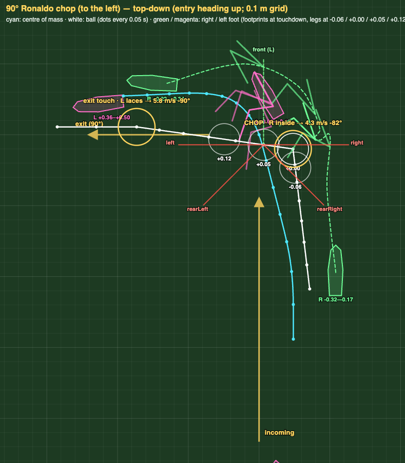
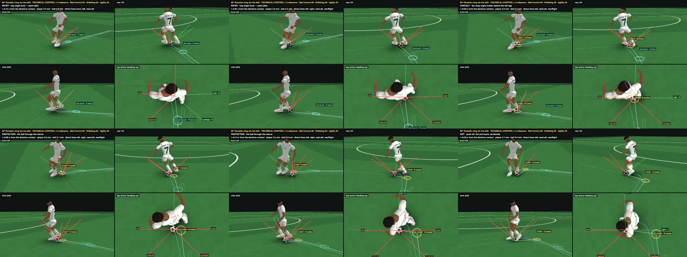
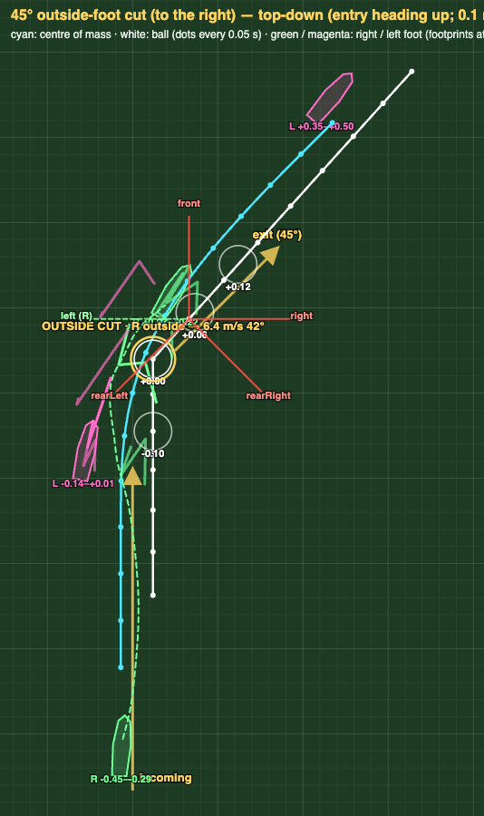
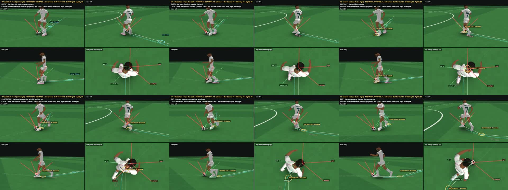
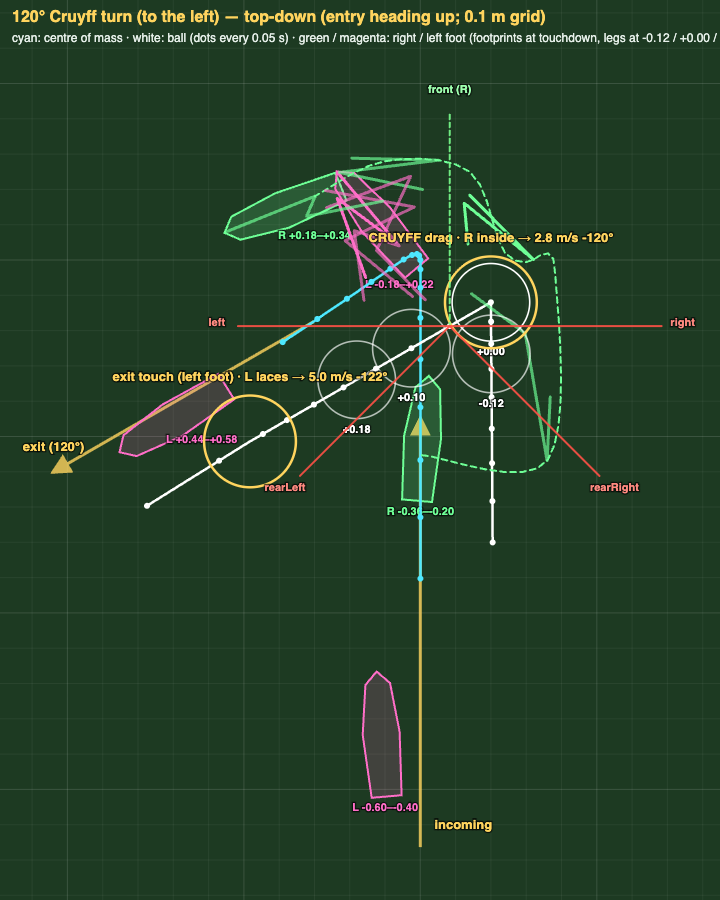
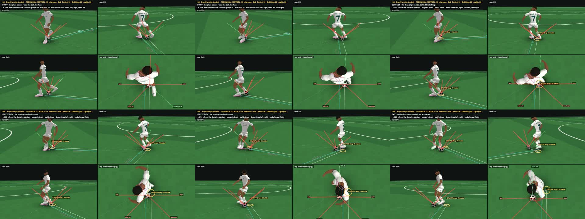
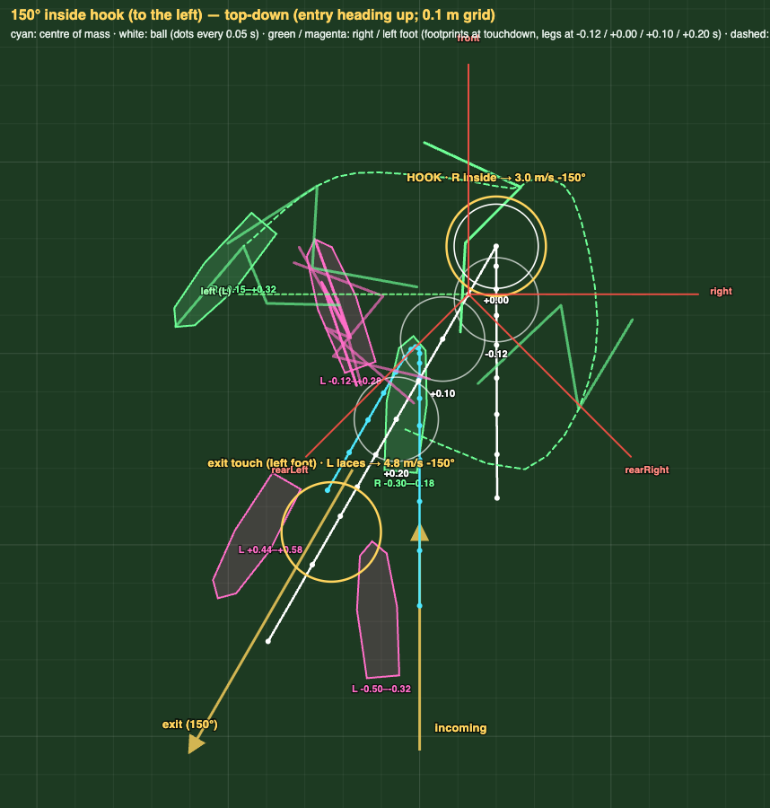
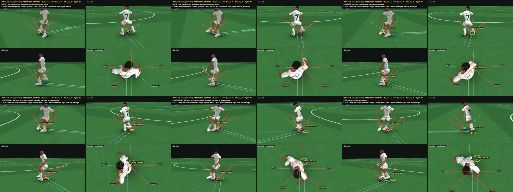
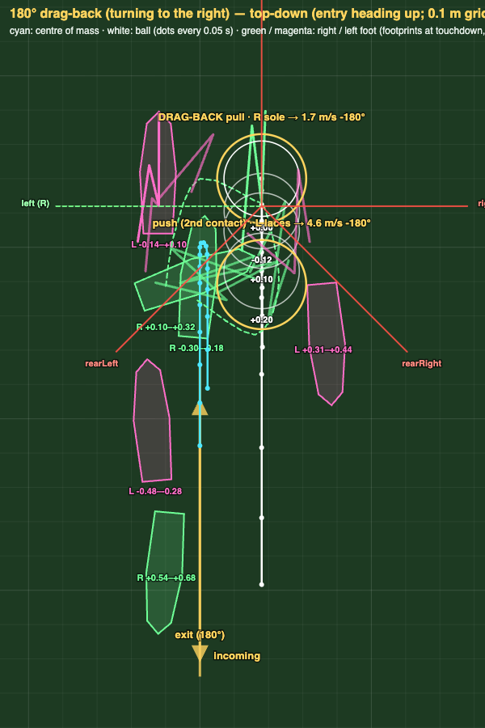
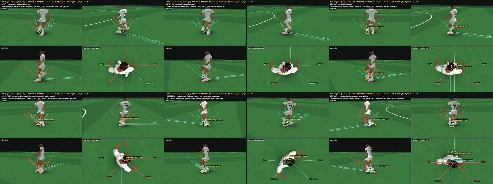

TECHNICAL-CONTROL-1.5 — technique reset: research, the Ronaldo chop spec, five elite references (presented for visual approval, not frozen)
LOCAL review page — the character is a real player's model: never published. I cannot play video in real time: the numbers are measured and the stills were inspected; the motion is yours to judge. Lab: http://127.0.0.1:8361/sandbox/visual/technical_control15.html?tech=CHOP90&single=quad. Nothing frozen; no ratings, styles or other moves were added (owner: "stop after the five elite reference turns").
1 · What changed
TECHNICAL-CONTROL-1.4's "Ronaldo chop" was a generic procedural contact labelled as a chop — the ball stayed exposed outside the body (your review). This pass started from research (coaching material — FIFA Training Centre, the FA, Meulensteen, academy session plans; and change-of-direction biomechanics — Dos'Santos, Falch, Vanrenterghem, Smith 2000's force plates for the Cruyff and the drag-back, Premier League turn data) and rebuilt the actions as authored football actions: ENTRY · CONTACT · PROTECTION · EXIT, each step, swing, contact and body channel authored — the engine only executes them (the frozen ball kernel between contacts, DRIBBLE-1's boot hull at each contact, TECHNICAL-CONTROL-1.1's leg chain for the joints, RUN-1's own stride for the running steps). Research notes with every quote and URL: research/R1 … R3; the full write-up: TECHNIQUE_RESEARCH_AND_SPEC.md ([E] a source states it · [I] inferred · [D] our decision).
2 · The research table (your columns)
The examples are for a right-footed player; mirror for the left. Angles are the change of direction from the run.
| Technique | Ideal use | Turn range | Speed | Contact foot / surface | Ball path | Shielding mechanism | Contacts | Body action | Exit |
|---|---|---|---|---|---|---|---|---|---|
| Protected forward carry | running with the ball, pressure alongside | ~0–30° (cutting across a chaser) [E/I] | up to near-sprint (with ball ≤ 7.6–8.2 m/s) [E] | the far foot; outside / pinkie toe, laces in space [E] | outside the far foot's line, never across toward the defender [I] | the whole body between opponent and ball; near arm up; side-on [E] | every step when tight, bigger touches in space [E] | partly side-on, knees bent, low [E] | drive into space, change pace [E] |
| Outside-foot cut | away from a defender in front / on the far side; winger cutting at speed | ~30–90° [E: 90° A2; I: 30–60° winger] | at speed, little braking ≤ 45°, plant + 2–3 braking steps toward 90° [E/I] | the foot on the turn side, outside ("pinky toe") [E] | stays on the cutting-foot side; never crosses the standing leg [I] | the cutting foot is the far foot; torso between defender and ball [I, from E1] | 1 cut + 1 exit touch [E] | plant (opposite) foot past the ball, low, body turns with the ball [E] | toward the cutting-foot side; big touch, accelerate over 5–6 steps [E] |
| Inside-foot cut | across the body when the defender has committed / overrun | ~90° (to ~135° after receiving) [E] | controlled approach [E] | the foot away from the new direction, inside [E] | ACROSS the front of the standing leg (the standing leg steps out of its way) [E] | only safe if the cut-side defender is committed; the body then rotates in between [I] | 1 cut + 1 exit touch [E] | step beside the ball with the standing foot, pivot, lower the body [E] | across the body; accelerate [E] |
| Ronaldo chop | at speed, defender alongside or slightly ahead, committed forward; cut in behind him | coaching sheets 45–60°; "slightly backward and to the side" to ~90–100° [E]; the popular "90°" is mostly from game guides [E] | at (near) top speed; momentum is the prerequisite [E] | the dominant foot, on the side cut away from; INSIDE, ankle locked, toe up [E] | BEHIND the support (front) leg, near its heel [E, 5 sources] | the support leg and body between the ball and a defender level / ahead; his momentum carries him past [E/I] | 1 (between a set touch and a bigger exit touch) [E] | a small hop / airborne entry; the support foot (new-direction side) lands PAST the ball; hips swivel; trunk largely forward; land and push off [E] | diagonally forward → sideways / slightly back; burst of speed [E] |
| Cruyff turn | defender in front / blocking a shot or pass; close marking | 90–180°, mostly 180° ("tap sideways or back") [E] | slow down on approach, sell the fake [E] | the faking (kicking) foot, INSIDE; "big toe behind the ball", "wrap the foot around the ball" [E] | BEHIND (and across) the standing leg, under the body [E] | at the drag the legs are between the ball and the blocking defender; after the turn the hip and back face him [I]; arm to feel the defender [E] | 1 drag (+ an exit touch; foot disputed) [E] | fake shot / pass; plant beside / past the ball, wide; bend the knees; shoulders turn with the drag; pivot toward the plant-foot side [E] | reversed / sideways; quick acceleration [E] |
| Inside hook | wide player facing the line under pressure; defender alongside | ~135–180° [E/I] | decelerate, shorten the stride [E] (one dissent: "easier at speed") | the other foot "comes round", INSIDE over and behind the ball, hooks it back [E] | pulled back behind the standing foot [E] | the turning shoulder; body between ball and defender [E] | 2: hook (inside) + exit (outside of the other foot) [E] | standing foot behind the ball, low, lean forward; rotate and lower the body; pivot the same way as the ball [E] | reversed; move away quickly [E] |
| Outside hook | defender on the standing-foot side; reversal | ~180° [E] | low [I] | the kicking foot through the gap, OUTSIDE over and behind the ball, toes up [E] | pulled back behind the standing foot [E] | the kicking leg / hip [I] | 1 + exit [E/I] | standing foot beside the ball (wider gap), knee bent, low, arms out; body turns with the ball [E] | reversed [E] |
| Drag-back (V / L variants) | back to goal, tight marking; reversal | ~180° (V / L: 90–180°) [E] | low to moderate, slow down [E] | sole (toe part) on top of the ball [E] | pulled straight back under the body, ≤ ~1 m [E]; L: then behind the standing leg [E] | the pull takes the ball away from a frontal tackle; the turning body sits between [I] | 2: pull + push (usually the opposite foot) [E] | standing foot beside the ball; turn quickly (side disputed) [E]; force-plate data: the support foot plants heel-to-toe, then re-places at ~90° and pushes off sideways (Smith 2000) [E] | reversed; a burst immediately [E] |
| Sole roll / drag across | defender in front with opposite momentum; tight space | lateral (~90° to travel for the roll), exit forward / diagonal [E/I] | low [E] | the carrying foot's sole [E] | across the front of the body to the other foot [E] | body protects; exit with the opposite foot keeps the ball away [E] | roll + exit touch [E] | open the hips to fake a pass; the standing foot shuffles with the ball [E] | the side the ball travels to; bigger touch [E] |
| Double touch / La Croqueta | defender diving in; tight areas, double-team | net ~20–45° (L-shaped: lateral then forward) [E/I] | medium–slow, then accelerate [E] | inside of one foot → inside of the other [E] | across the front, between the feet, never behind a leg [E/I] | little shielding; removes the ball from a committed leg [E] | 2 [E] | weight shifts across [E] | forward past the defender, change of pace [E] |
| Body feint + exit | defender about to commit, ~1 m away | opposite to the fake, ~30–60° [E/I] | sources disagree: youth "slow down" vs skilled players keep a high body speed (Tsukuba) [E] | exit with the outside (of the other foot; Matthews: same foot) [E] | stays in front of the body [I] | body between defender and ball [E] | feint 1 (exit); Matthews 2 [E] | drop the shoulder; exaggerate the upper body; minimise COM displacement (rugby) [E] | away from the fake; accelerate immediately [E] |
Principles the sources agree on
1. Turn away from pressure; use the far foot. [E]
- "use the foot furthest away from your opponent, so you have your whole body between them and the ball" (Special Olympics guide);
- "position their body between their opponent and the ball … extend their arms … using their furthest foot" (FIFA futsal shielding);
- "turn away from pressure" (FA, FIFA Corneal).
2. The surface sets the direction. [E]
- the outside → toward the same side;
- the inside → across the standing leg;
- the inside, Cruyff-style → behind the standing leg, backwards (A8).
3. Low, side-on body. [E] Low centre of gravity, knees bent, arms out, side-on stance (E1, E2, A4, S28).
4. Exit. [E] A bigger exit touch, then acceleration from a lowered body (A1, A5–A7, B1, C2, D3, S8, S10, S18).
5. The angle–velocity trade-off. [E] Sharper turns need lower approach speeds and more braking steps (Dos'Santos 2018, Falch 2020).
| | 45° | 90° | 135° | 180° |
|---|---|---|---|---|
| approach speed, m/s (no ball) | 4.7–5.8 | 3.8–4.6 | 3.5 | 3.4–4.0 |
| braking steps before the plant (4 m approach) | 0.4 | 2.7 | 3.3 | 3.3 |
| plant contact, s | 0.15 | 0.18 | 0.21–0.23 | 0.30–0.33 |
- At 5 m/s one plant achieves only about 18° of an intended 45° (Vanrenterghem 2012).
- Premier League 120–180° turns are entered at about 3.5 m/s; only 7.7% of turns start above 5.5 m/s (Griffiths 2025).
6. Braking happens before the plant. [E] On the penultimate contact for turns of 60° and more, and on the step before it for 180° (Dos'Santos 2018 / 2021, Nedergaard 2014).
7. The body around the plant. [E]
- The pelvis pre-rotates toward the exit: about 34–49° at 90°, about 14° at 45° (Havens & Sigward 2015; Dos'Santos 2021).
- The plant foot lands about 0.31 m outside the centre of mass at 90°.
- [I] The centre of mass deliberately passes outside the base of support.
8. With the ball. [E] Dribbling is about 9–16% slower than sprinting, and the penalty grows with the number of direction changes (Preissler 2023, Makhlouf 2022).
3 · The action map by angle
The research supports this map [E/I]; the [D] notes are our choices.
| Direction change | Technique (research) | Why |
|---|---|---|
| ≤ 30° | the far foot's outside / laces carry, in stride | one plant cannot do more at speed; the speed is kept |
| ~45° (– 60°) | outside-foot cut with the far foot (away from pressure); the chop at speed when the defender is alongside | coaching: winger cuts and the chop cluster at 45–60°; little braking |
| ~90° | Ronaldo chop at speed when the turn goes to the support-foot side (cutting in behind a defender alongside) — otherwise the inside / outside cut with a plant and braking steps | the chop's upper range ("slightly backward and to the side"); [D] the owner's reference |
| ~120° | Cruyff turn: decelerated, the ball dragged behind the standing leg "sideways or back" | its range is 90–180°, and it is the chop's decelerated "older brother"; beyond the chop's credible range |
| ~150° | inside hook: stop-turn, the inside hooks the ball back behind the standing foot, the body turns with the ball, the shoulder shields | 135–180°; a different mechanism from the Cruyff (reach over and hook vs drag behind) |
| 180° | drag-back (sole pull-back under the body, push out with the other foot) | the dedicated reversal; force-plate evidence for its two support contacts |
[D] Turn directions for the five references. Each technique has a natural side for a right-footed carrier:
- the outside cut goes to the right;
- the chop, the Cruyff and the inside hook (right foot) turn to the left;
- the drag-back turns to the side of the dragging foot (the right).
4 · The Ronaldo chop — specification and the 90° reference
The 90° reference is to the left, for a right-footed player. Top-down, the player runs "north" (+y); "west" is the new line.
Evidence summary [E]:
- Speed and preparation: done at (near) top speed, with a set touch slightly bigger and toward 11 o'clock.
- Support foot: a little hop; the support (left) foot lands past the ball, on the new-direction side.
- Contact: the dominant (right) foot strikes with the inside, ankle locked, toe up, and chops the ball behind the support leg.
- Body: hips swivel, body low, trunk largely forward.
- Exit: diagonally forward to sideways / slightly back, then a burst.
- Contacts: one redirecting contact.
- When to use it: a defender alongside or slightly ahead, committed forward.
[D] Reference choices (as built — sandbox/visual/technical_control15/tc15_tech.js CHOP90). These lie within the sources' spread. Local frame: the
run is "north" (+a), the player's right is +l, and the origin is the centre of mass at the chop.
What the geometry had to satisfy (found while building it):
- The left foot is both the brake and the push-off [E S1: "as he comes down on the left foot he pushes off to follow the ball"]. A foot
can only push the body left if the body is to the left of it. So:
- the hop off the right foot already moves the body left;
- the left foot lands in front of the ball, almost under the body's line;
- the body then passes over and left of it.
- The left leg crosses in front of the ball (owner). The ball stays in the right lane, and the body moves left of it during the hop.
- The striking foot's direction. The ball still rolls forward when it is chopped. For it to go sideways (or slightly back), the inside of
the right foot must push back-left. The foot is therefore turned in (toe forward-left) and meets the ball's front-right. Relative to the
body it moves back-left: the hip extends and adducts behind the standing leg. This is the "chop" (S1: "slice the ball slightly backward
and to the side").
- After the chop. The ball passes behind the left heel. The body has turned over the left foot, so there is no room behind it, and the
striking foot recovers forward round the outside of the plant foot: a crossover step onto the new line.
Timeline (t = 0 is the chop contact):
| Phase | Time | Body | Feet | Ball |
|---|---|---|---|---|
| ENTRY | −1.30 … −0.38 s | runs north at 5.0 m/s, the ball in the right lane | RUN-1's stride | the previous touch's ball, 0.4 m ahead in the right lane |
| ENTRY · set touch | −0.38 s | 5.0 m/s | the right laces ("slightly bigger", toward 11 o'clock: −7°) | sent 3.6 m/s to the chop point |
| ENTRY · hop | −0.32 … −0.17 s (right stance), flight −0.17 … −0.02 s | the penultimate (right) stance brakes 5.0 → 4.0 m/s and pushes the body left (travel −14°); pelvis turning (−10 → −34°) | the right foot 0.30 m right of the body's line | rolls on, 2.2 m/s |
| PLANT | −0.02 s | 3.9 m/s | the left (shielding) foot lands 0.30 m past the ball and 0.14 m to its left (ankle), toes turned 30° toward the new line; it crosses in front of the ball | 0.10 m behind / 0.24 m right of the centre of mass |
| CONTACT | 0 | 3.5 m/s; travel −20°; pelvis −20° ("trunk forward"); low (−7.5 cm) | the right foot (in the air since −0.17 s) comes past the ball's right side, toe turned in (−21°), its inside on the ball's front-right, 0.17 m behind the left heel; DRIBBLE-1's boot hull: the INSIDE face on the ball | chopped at 4.3 m/s, 82° to the left (impulse −111°) |
| PROTECTION | 0 … +0.25 s | braking to 2.2 m/s, turning over the left foot (travel −55° at +0.10, −82° at +0.17); pelvis unwinding −28° → −80° | the left foot planted (pushes off at +0.16); the right foot recovers round the outside of it | crosses the left foot's line 0.21 m behind its heel at +0.04 s; passes 0.23 m from the pelvis (under the body) |
| EXIT | +0.17 s … | accelerates 2.2 → 3.9 m/s at +0.5 s → 5.3 at +1.0 s (4.7 m/s² over the first 0.5 s); on the new line at +0.24 s | the right foot lands on the new line at +0.20 s (a crossover step); then RUN-1's stride | the exit touch (left laces) at +0.30 s, 5.8 m/s along the new line; a carry touch at +0.85 s |
Acceptance (the owner's 8 checks) — measured by tools/tc15_eval.mjs. Evidence: evidence/TC15_EVIDENCE.json.
| # | Check | Measured | |
|---|---|---|---|
| 1 | approach at useful speed | 5.0 m/s; 3.5 at the chop | pass |
| 2 | the shielding leg moves across / in front | the left foot lands 0.30 m past the ball, 0.02 s before the chop | pass |
| 3 | the striking foot comes behind / across it | the right ankle 0.17 m behind the left heel at the chop | pass |
| 4 | inside contact | the INSIDE face of the boot hull on the ball | pass |
| 5 | the ball behind / across the shielding leg, through the stance | crosses the left foot's line 0.21 m behind its heel; 0.23 m from the pelvis | pass |
| 6 | the body blocks the obvious pressure line | a reach from the front: blocked 0.93 at the chop, 0.95 through the stance. From the right: blocked at the chop, but it opens as the striking leg recovers (0.18 through the stance) — a limitation | pass (front) |
| 7 | lands / orients to the new line | pelvis −90° at +0.35 s; on the line at +0.24 s | pass |
| 8 | immediate acceleration | 2.2 → 3.9 → 5.3 m/s (+0.5 / +1.0 s) | pass |
Failure condition (the ball kicked around the outside of the body): not triggered. The ball passes 0.23 m from the pelvis, under the body.
The top-down diagram is diagrams/CHOP90_topdown.svg (also in the review page).
Your acceptance test, measured (tools/tc15_eval.mjs)
| # | check | measured | |
|---|---|---|---|
| 1 | approaching at useful speed (≥ 4.5 m/s) | 5 m/s; 3.5 at the chop | pass |
| 2 | the shielding (left) leg moves across / in front of the ball | left foot lands 0.30 m ahead of the ball, 0.14 m to its left; -0.02 s before the chop | pass |
| 3 | the striking foot comes behind / across it | at the chop the right ankle is 0.17 m behind the left heel; it sweeps to 0.17 m behind it | pass |
| 4 | the inside of the striking foot contacts the ball | surface INSIDE; the boot face on the ball (DRIBBLE-1's hull): INSIDE | pass |
| 5 | the ball travels behind / across the shielding leg through the stance | crosses the left foot's line 0.21 m behind its heel at +0.037 s; nearest the pelvis 0.226 m at +0.033 s | pass |
| 6 | the body blocks the obvious pressure line (a defender level-ahead, committed forward; alongside on the right shown too) | a reach from the FRONT blocked 0.93 at the chop, 0.95 through the stance · from the RIGHT 0.2 / 0.18 (the right side opens as the striking leg recovers: a limitation) | pass |
| 7 | the player lands / orients toward the new line | pelvis -90° at +0.35 s (exit -90°); travel -91° at +0.5 s; on the line at +0.24 s | pass |
| 8 | immediate acceleration out | 2.2 m/s at +0.171 s → 3.9 m/s at +0.5 s → 5.31 at +1.0 s (4.66 m/s² over 0.5 s) | pass |
| fail condition: the ball kicked externally around the player's body | ball nearest the pelvis 0.226 m | not triggered |
8 / 8. Check 6 is judged on the front line (a defender level-ahead, committed forward — the cue the sources give for the chop); from the right the ball is shielded at the chop but the side opens as the striking leg recovers — shown, not hidden.

| approach | 5 m/s → 3.5 at the decisive contact → min 2.2 at +0.171 s |
|---|---|
| decisive contact | R inside (boot hull face on the ball: INSIDE) · ball 2.18 → 4.3 m/s at -82° · impulse -111.41° · foot heading -21.41° |
| exit | body -91° at +0.5 s · pelvis -90° at +0.35 s · on the new line at +0.24 s · 4.66 m/s² over 0.5 s · 3.9 m/s at +0.5, 5.31 at +1.0 |
| contacts | set touch -0.38 s (R laces, 3.63 m/s @ -6.8°) · CHOP +0.00 s (R inside, 4.3 m/s @ -82°) · exit touch +0.30 s (L laces, 5.8 m/s @ -90°) |
| ball and body | nearest the pelvis 0.226 m at +0.033 s · crosses the support foot's line 0.209 m behind its heel at +0.037 s |
| blocked (reach from …) | contact: front 93%, left 0%, right 20%, rearLeft 0%, rearRight 0% through the stance (0 … +0.25 s): front 95%, left 0%, right 18%, rearLeft 0%, rearRight 0% exit (+0.25 … +0.6 s): front 24%, left 0%, right 75%, rearLeft 0%, rearRight 0% the technique's pressure side (rightAhead): 0.56 / 0.56 / 0.5 — a defender alongside on the right / level-ahead, committed forward (S8, S11: 'alongside you', 'in behind the defender') |
| body | leg clearance min 2.86 cm (1.633 s) · ball vs boots min -2.04 cm (2.158 s) · hard ROM exceeded 6.09° (R hip) · ankle orientation error max 19.85° · reach adaptation max 6.88 cm |
lab: CHOP90 (views: quad · front 3/4 · rear 3/4 · side · top · run; 1× … 0.1×; the pressure lines on / off)

5 · The other four references
45° outside-foot cut (to the right).
- Approach and plant: 5.5 m/s. The left foot plants 0.30 m ahead and 0.22 m left of the body (the outside foot pushes the body right).
- Cut: 0.12 s into the plant, the right foot comes through between the plant foot and the ball. Its outside (toe forward-right) sends the
ball 6.4 m/s at 42°. The impulse is 81°: the ball was rolling forward.
- Body: turns over two steps (14° at the cut, 41° at +0.22 s, 45° at +0.36 s). Speed dips to 4.85 m/s, then 5.6 m/s at +0.6 s.
- Exit: the next touch (right laces) at +0.58 s.
120° Cruyff turn (to the left).
- Approach: 4.0 m/s. One touch at −0.99 s sends the ball to rest beside the plant point. Braking over two steps.
- Plant: the left foot lands 0.18 s before the drag, under the left hip, slightly ahead. The body brakes onto it (0.35 m/s at the drag).
- Drag: the right leg's fake backswing, then the foot goes past the ball's right side to its front, toe down, inside wrapped round it.
It drags the ball 2.8 m/s toward 120°, behind the left heel and under the body (0.21 m from the pelvis).
- Pivot: on the left forefoot (80°). The right foot swings round the front of the plant foot and lands on the new line at +0.18 s.
- Exit: the left foot takes the ball on (laces, 5.0 m/s) at +0.38 s.
150° inside hook (to the left).
- Approach: 3.5 m/s, braked with short steps. The standing (left) foot is beside the ball, 0.24 m to its left.
- Hook: the right foot comes round the ball's right side and over its far side, toe turned in (−68°). It hooks the ball back with the
inside at 3.0 m/s toward 150°, past the standing foot and under the body (0.06 m from the pelvis).
- Turn: the body turns with the ball, low (−11 cm). The standing foot pivots once the ball has gone past.
- Exit: the left foot takes it on at +0.38 s.
180° drag-back (turning to the right).
- Approach: 3.0 m/s, braked. The standing (left) foot is beside the ball.
- Pull: the right sole on top of the ball pulls it straight back at 1.7 m/s under the body (0.17 m from the pelvis). The pulling foot
steps down behind and becomes the turning support.
- Turn: the body turns right through 180°. The left foot plays the second contact (laces, 4.6 m/s along the reversed line) at +0.24 s
and is re-placed beside the ball's path.
45° outside-foot cut (to the right) — OUTSIDE CUT

| approach | 5.5 m/s → 5.05 at the decisive contact → min 4.85 at +0.1 s |
|---|---|
| decisive contact | R outside (boot hull face on the ball: OUTSIDE) · ball 4.06 → 6.4 m/s at 42° · impulse 80.81° · foot heading 15.81° |
| exit | body 45° at +0.5 s · pelvis 45° at +0.35 s · on the new line at +0.1 s · 1.5 m/s² over 0.5 s · 5.43 m/s at +0.5, 6.1 at +1.0 |
| contacts | carry -0.51 s (R laces, 5.95 m/s @ 0°) · OUTSIDE CUT +0.00 s (R outside, 6.4 m/s @ 42°) |
| ball and body | nearest the pelvis 0.233 m at +0 s |
| blocked (reach from …) | contact: front 0%, left 100%, right 0%, rearLeft 100%, rearRight 0% through the stance (0 … +0.25 s): front 0%, left 100%, right 0%, rearLeft 93%, rearRight 0% exit (+0.25 … +0.6 s): front 0%, left 68%, right 0%, rearLeft 99%, rearRight 0% the technique's pressure side (left): 0.5 / 0.5 / 0.34 — a defender in front / on the far (left) side (A1, A2: cut away from the defender with the far foot) |
| body | leg clearance min 5.73 cm (1.142 s) · ball vs boots min -2.01 cm (1.117 s) · hard ROM exceeded 0° · ankle orientation error max 10.88° · reach adaptation max 8.85 cm |
lab: OUTCUT45 (views: quad · front 3/4 · rear 3/4 · side · top · run; 1× … 0.1×; the pressure lines on / off)

120° Cruyff turn (to the left) — CRUYFF TURN

| approach | 4 m/s → 0.35 at the decisive contact → min 0.15 at +0.079 s |
|---|---|
| decisive contact | R inside (boot hull face on the ball: INSIDE) · ball 1.02 → 2.8 m/s at -120° · impulse -135.02° · foot heading -45.02° |
| exit | body -123° at +0.5 s · pelvis -120° at +0.35 s · on the new line at +0.44 s · 6.11 m/s² over 0.5 s · 2.8 m/s at +0.5, 4.71 at +1.0 |
| contacts | CRUYFF drag +0.00 s (R inside, 2.8 m/s @ -120°) · exit touch (left foot) +0.38 s (L laces, 5 m/s @ -122°) |
| ball and body | nearest the pelvis 0.214 m at +0.029 s · crosses the support foot's line 0.253 m behind its heel at +0.121 s |
| blocked (reach from …) | contact: front 100%, left 0%, right 0%, rearLeft 0%, rearRight 0% through the stance (0 … +0.25 s): front 95%, left 0%, right 0%, rearLeft 0%, rearRight 0% exit (+0.25 … +0.6 s): front 82%, left 0%, right 1%, rearLeft 0%, rearRight 0% the technique's pressure side (front): 1 / 0.95 / 0.82 — a defender in front, blocking the shot / pass (S2, S3: 'in front of you', close marking) |
| body | leg clearance min -1.56 cm (1.571 s) · ball vs boots min -1.6 cm (1.229 s) · hard ROM exceeded 0° · ankle orientation error max 22.8° · reach adaptation max 6.8 cm |
lab: CRUYFF120 (views: quad · front 3/4 · rear 3/4 · side · top · run; 1× … 0.1×; the pressure lines on / off)

150° inside hook (to the left) — INSIDE HOOK

| approach | 3.5 m/s → 0.4 at the decisive contact → min 0.15 at +0.079 s |
|---|---|
| decisive contact | R inside (boot hull face on the ball: INSIDE) · ball 0.97 → 3 m/s at -150° · impulse -157.25° · foot heading -67.25° |
| exit | body -150° at +0.5 s · pelvis -150° at +0.35 s · on the new line at +0.4 s · 5.7 m/s² over 0.5 s · 2.65 m/s at +0.5, 4.4 at +1.0 |
| contacts | HOOK +0.00 s (R inside, 3 m/s @ -150°) · exit touch (left foot) +0.38 s (L laces, 4.8 m/s @ -150°) |
| ball and body | nearest the pelvis 0.06 m at +0.112 s · crosses the support foot's line 0.346 m behind its heel at +0.321 s |
| blocked (reach from …) | contact: front 100%, left 100%, right 0%, rearLeft 0%, rearRight 0% through the stance (0 … +0.25 s): front 40%, left 62%, right 0%, rearLeft 0%, rearRight 0% exit (+0.25 … +0.6 s): front 65%, left 0%, right 0%, rearLeft 0%, rearRight 0% the technique's pressure side (rightAhead): 0.5 / 0.2 / 0.32 — a defender ahead / alongside on the right, closing down: the hook turns the player's back to him (A9, S24: the turning shoulder between ball and defender) |
| body | leg clearance min -2 cm (1.008 s) · ball vs boots min -1.63 cm (2.296 s) · hard ROM exceeded 2.68° (R hip) · ankle orientation error max 30.65° · reach adaptation max 4.88 cm |
lab: HOOK150 (views: quad · front 3/4 · rear 3/4 · side · top · run; 1× … 0.1×; the pressure lines on / off)

180° drag-back (turning to the right) — DRAG-BACK

| approach | 3 m/s → 0.35 at the decisive contact → min 0.15 at +0.079 s |
|---|---|
| decisive contact | R sole (boot hull face on the ball: SOLE) · ball 0.62 → 1.7 m/s at -180° · impulse 179.93° · foot heading -0.07° |
| exit | body -180° at +0.5 s · pelvis -180° at +0.35 s · on the new line at +0.36 s · 5.91 m/s² over 0.5 s · 2.7 m/s at +0.5, 4.56 at +1.0 |
| contacts | DRAG-BACK pull +0.00 s (R sole, 1.7 m/s @ -180°) · push (2nd contact) +0.24 s (L laces, 4.6 m/s @ -180°) |
| ball and body | nearest the pelvis 0.167 m at +0.125 s |
| blocked (reach from …) | contact: front 93%, left 100%, right 33%, rearLeft 33%, rearRight 13% through the stance (0 … +0.25 s): front 69%, left 89%, right 49%, rearLeft 74%, rearRight 48% exit (+0.25 … +0.6 s): front 62%, left 2%, right 0%, rearLeft 0%, rearRight 0% the technique's pressure side (front): 0.93 / 0.69 / 0.62 — a defender in front, tight (back to goal / closing down — S27, S28) |
| body | leg clearance min -2.08 cm (1.458 s) · ball vs boots min -3.56 cm (1.342 s) · hard ROM exceeded 0° · ankle orientation error max 30.35° · reach adaptation max 5.5 cm |
lab: DRAGBACK180 (views: quad · front 3/4 · rear 3/4 · side · top · run; 1× … 0.1×; the pressure lines on / off)

6 · The ball-exposure diagnostic
The per-frame measure is tc15_ref.js exposureAt, recorded by every reference run. The summaries are in tools/tc15_protect.mjs. It is a
technique diagnostic, not gameplay or a tackle probability.
The model. A defender's REACHING LEG comes at the ball from one of five directions: front, left, right, rear-left, rear-right.
- The directions are fixed from the ENTRY heading (a defender does not turn with the player).
- The leg is a straight line from his hip, 0.9 m out from the ball and 0.85 m high, to the ball.
- It is BLOCKED if it passes through the player within the reaching leg's own 6 cm:
- a leg capsule (thigh 7.5 cm, shin 5.2 cm, boot 4.8 cm, as TECHNICAL-CONTROL-1.3's diagnostics);
- the hips (hip to hip, 10 cm);
- the trunk (pelvis to chest, 15 cm).
- Otherwise it is a DIRECT LINE.
A ball under the player's body is shielded by the body; a ball out beside his feet is not. A first version tested only the legs, at ball
height, and so counted a ball under the body as open. It was replaced before any result was reported.
Per frame:
- the five named directions (which part blocks each);
- the open sector all round the ball (36 directions);
- the ball relative to the pelvis, the support foot and the contact foot.
Reported:
- the exposed share per direction in three windows: CONTACT (±0.03 s), through the stance (0 … +0.25 s) and EXIT (+0.25 … +0.6 s);
- the share blocked on the technique's own obvious pressure side.
In the lab: the five lines drawn from the ball (green = blocked, with the part named; red = direct line).
7 · What is explicit, inferred, ours
| Explicit [E] | Inferred [I] | Ours [D] | |
|---|---|---|---|
| Chop | inside of the dominant foot, behind the support leg, hop, support foot past the ball on the new side, at speed, one redirecting touch, 45–60° (coaching) to "slightly back" | the striking leg crosses behind the support heel; trunk forward, pelvis turned; the support landing is the brake and the push-off | the 90° reference: 5.0 m/s, braked to 4.0 by the hop, 3.5 at the chop; the left foot 0.30 m past / 0.14 m left of the ball (ankle); the chop at 4.3 m/s, 82° (the body exits at 90°); the striking foot recovers forward round the plant foot (a crossover step); the exit touch at +0.30 s |
| Cruyff | inside drag behind the standing leg, fake, slow down, 90–180° | the hip and back face the defender after the turn | the 120° reference: braked onto the plant (the pivot over it); the drag 2.8 m/s; the left foot takes the ball on |
| Inside hook | the inside over and behind the ball, hooks back, two touches, the shoulder shields | the 135–180° range | the 150° reference: the foot round and beyond the ball, toe turned in; the hook 3.0 m/s; the left foot takes it on |
| Drag-back | sole pull back under the body, ≤ 1 m, two touches, the support re-placed at 90° | high speed is inappropriate | the 180° reference: the pull 1.7 m/s; turning to the dragging foot's side; the push with the left laces |
| Outside cut | the outside of the turn-side foot, plant past the ball, exit touch | the ball never crosses the standing leg | the 45° reference at 5.5 m/s: the cut 6.4 m/s at 42°, the body over two steps |
8 · The body: what the numbers say, the limitations
| reference | leg clearance min | ball vs boots min | hard ROM exceeded | ankle orientation error max | reach adaptation max |
|---|---|---|---|---|---|
| 90° Ronaldo chop (to the left) | 2.86 cm at 1.633 s | -2.04 cm at 2.158 s | 6.09° R hip at 0.817 s | 19.85° at 1.192 s | 6.88 cm at 0.35 s |
| 45° outside-foot cut (to the right) | 5.73 cm at 1.142 s | -2.01 cm at 1.117 s | 0° | 10.88° at 1.183 s | 8.85 cm at 0.75 s |
| 120° Cruyff turn (to the left) | -1.56 cm at 1.571 s | -1.6 cm at 1.229 s | 0° | 22.8° at 1.475 s | 6.8 cm at 1 s |
| 150° inside hook (to the left) | -2 cm at 1.008 s | -1.63 cm at 2.296 s | 2.68° R hip at 1.496 s | 30.65° at 1.558 s | 4.88 cm at 0.1 s |
| 180° drag-back (turning to the right) | -2.08 cm at 1.458 s | -3.56 cm at 1.342 s | 0° | 30.35° at 1.325 s | 5.5 cm at 0.1 s |
- Leg clearance is TECHNICAL-CONTROL-1.3's capsule measure (conservative radii; TECHNICAL-CONTROL-1.3 flagged below −1.2 cm). Residual touches of 1.5 – 3 cm remain in the reversals (the swinging foot past the pivoting foot) and a few centimetres of boot against the ball right after some touches — visible only frame by frame, if at all.
- The ankle orientation error is what the joint chain could not reach of an authored foot orientation (it saturates inside the anatomical ranges — the foot shown is the reachable one): ≤ 23° in the cuts and the Cruyff, 26 – 31° in the hook and the drag-back (the foot whipped round the ball / onto it).
- The reach adaptation (the pelvis moved toward a planted leg at full stretch) is ≤ 9 cm, mostly in the run-up's longest stance.
9 · What is not done, and your decisions
- Not integrated. The five references are stand-alone authored actions in their own lab, on the same rig, ball kernel, boot hull, leg chain and running stride. They do not yet run inside TECHNICAL-CONTROL-1.2 / 1.3's carry simulation (the planner does not select them). After your approval, the integration replaces TECHNICAL-CONTROL-1.4's technique definitions.
- Ratings. Ball Control 99 is the ideal launch (no execution error), and Dribbling and Agility are the elite timings. The rating curves come only after the techniques are approved, as you asked.
- One side, one foot. Each reference is right-footed and one-sided. Mirroring is mechanical once approved.
- Decisions for you:
- the chop's angle: the ball goes 82° and the body 90° (the coaching range is 45–60° to "slightly back");
- whether the chop's striking foot should land crossed behind the plant leg (the classic photo), rather than stepping round it. Behind it there is no room once the body has turned over the plant foot without the legs intersecting; it would need the hips to stay forward longer;
- for 150°, the inside hook (built) or the outside hook (it turns toward the kicking foot, with simpler leg mechanics);
- the drag-back's turn side (the sources disagree; built: toward the dragging foot);
- whether the reach-from-the-right opening after the chop matters for your use of it.
Files: sandbox/visual/technical_control15/ (tc15_ref.js the engine · tc15_tech.js the five techniques · tc15_viewer.js + technical_control15.html the lab · tools/ the evidence, the diagrams, the captures) · review_artifacts/technical_control15/ (research/, TECHNIQUE_RESEARCH_AND_SPEC.md, diagrams/, clips/, strips/, evidence/, review/).